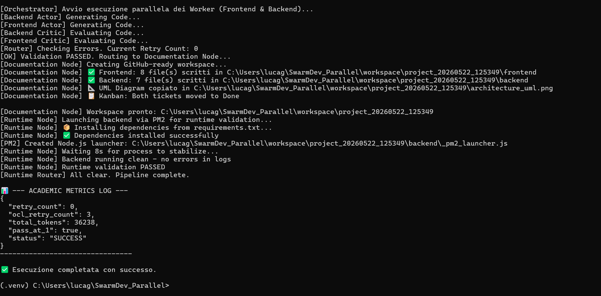

L'Evoluzione dello Sviluppo Software Multi-Agente
Dimentica il "Chatter Smell". Abbraccia l'orchestrazione a grafo deterministica con validazione matematica A2A-OCL.
Contesto e Obiettivi
Il Contesto: Chatter Smell
Gli agenti AI tradizionali, lasciati liberi di dialogare tra loro in linguaggio naturale, tendono a degenerare nel cosiddetto "Chatter Smell": incomprensioni, loop discorsivi infiniti, allucinazioni collettive e progressiva perdita del focus sul task tecnico.
L'Obiettivo: Parallelismo Deterministico
SwarmDev mira a eliminare le conversazioni inefficaci forzando gli agenti a comunicare esclusivamente tramite contratti JSON rigidi e validati matematicamente (A2A-OCL). Vogliamo parallelizzare la scrittura del codice (es. frontend e backend insieme) in modo matematicamente sicuro e prevedibile.
La Metafora di Gurdjieff
Il Controllo del Caos
Nell'allegoria di Gurdjieff, l'uomo è visto come una carrozza. In SwarmDev, questa geniale metafora illustra il nostro paradigma architetturale:
- Il Cavallo (Forza Motrice): Requisiti di Processo espressi in Linguaggio Naturale (Parlant). Fornisce l'energia e l'intento, ma è per natura imprevedibile.
- Il Cocchiere (La Mente): Il Project Manager (PM). È il generatore di contratti che usa la logica per tradurre il caos in direttive strutturate.
- Le Redini (Controllo): Il Flusso di Contratti JSON formalizzati. Sono l'unico mezzo di comunicazione, garantendo che le istruzioni siano matematicamente inequivocabili.
- La Carrozza (Il Corpo): La Piattaforma OpenCode. I cluster operativi che implementano materialmente il codice e inviano un Feedback di Convalida al Cocchiere.
Mente ad Alveare (Swarm Mind)
L'architettura cognitiva stratificata che apprende dagli errori e consolida l'esperienza nel tempo.
Node
Implementazione e Architettura
La memoria non è un semplice database, ma un processo di distillazione cognitiva in 3 fasi:
- Sensory & Working Memory: Lo stato corrente del grafo LangGraph. È volatile e contiene solo il contesto strettamente necessario per l'esecuzione del task corrente.
- Episodic Buffer (Diario di Bordo): Ogni azione, input, output ed errore viene loggato in tempo reale in un database SQLite (Short-Term).
- Long-Term Semantic Memory: A fine ciclo, il Consolidation Node estrae gli episodi rilevanti (es. bug risolti), li sintetizza usando il
mind_llme li converte in vettori dentro ChromaDB.
Metamemoria: LTP e LTD
Ispirata alle neuroscienze, la memoria implementa il Potenziamento e la Depressione a Lungo Termine.
- LTP (Rinforzo): Se un ricordo prelevato da ChromaDB aiuta a risolvere un problema al primo tentativo, il suo
uses_countaumenta e il timestamp si rinnova. - LTD (Oblio): I ricordi non usati da oltre 30 giorni o che portano a fallimenti ripetuti (
failures_count) vengono degradati o dimenticati.
Ispezione tramite CLI
# Ispeziona il Diario di Bordo (Short-Term)
python swarm_mind/cli.py short-term --active
# Verifica la top-10 dei Ricordi Consolidati
python swarm_mind/cli.py long-term-list --limit 10
# Cerca soluzioni nel Cervello Vettoriale
python swarm_mind/cli.py long-term-query "React error"Lo Stato dell'Arte
I framework attuali (es. AutoGen, CrewAI) eccellono nel brainstorming e nel problem solving discorsivo, ma faticano quando si tratta di produrre architetture ingegneristiche complesse senza supervisione. La natura probabilistica degli LLM porta inevitabilmente a divergenze nel codice.
SwarmDev sposta il paradigma: non più "Agenti che parlano come umani", ma "Attori funzionali che elaborano transazioni di stato". Utilizzando LangGraph, lo stato dell'arte per i flussi di lavoro LLM orientati ai grafi ciclici (DAG), riusciamo ad ingabbiare la potenza generativa in percorsi direzionali obbligati (il metodo Get-Shit-Done), dove il routing è governato esclusivamente dai risultati crudi di linter e compilatori (Actor-Critic).
Simulazione Flusso Dati
Ecco come il dato viaggia dal planning fino al rilascio, attraversando i Quality Gate in parallelo.
Architettura e Flusso Parallelo

Un Ecosistema Solido
Il parallelismo non è lasciato al caso. Si poggia su infrastrutture avanzate:
- SuperPowers & CodeWiki: Iniezione cognitiva (MIND) per consapevolezza architetturale profonda.
- LLMWiki & ChromaDB: Memoria vettoriale RAG per ripescare soluzioni e prevenire regressioni (integrazione SeaClip).
- Actor-Critic con CodeGraph: Ogni codice passa da un Gate di Qualità, che sfrutta un Knowledge Graph generato on-the-fly per offrire all'LLM contesto semantico (RAG su grafo) senza saturare la Context Window.
- CLIAnything & Docker: Esecuzione fluida, isolata e sicura dell'analisi statica (Sonar, ESLint, Flake8).
Micro-Loops e Quality Gate
L'ingegneria dietro la magia: routing automatico basato sull'analisi statica (Actor-Critic).
$ CodeGraph: Costruzione mappa semantica completata.
$ Frontend_Critic: Esecuzione ESLint su branch isolato...
ERROR: [ESLint] Parsing error: Unexpected token, expected "," (line 42)
$ LangGraph Routing: Frontend_Critic -> Frontend_Actor
$ Frontend_Actor: Ricevuto errore dal compilatore. Correzione in corso (Tentativo 1/3)...
$ Frontend_Critic: Riesecuzione ESLint...
SUCCESS: [ESLint] Nessun errore rilevato.
$ LangGraph Routing: Frontend_Critic -> Test_Writer
Il Cluster di Testing Sandbox
Micro-loops dedicati per raggiungere l'85% di coverage prima del merge.
Knowledge Graph (CodeGraph)
Come generiamo l'architettura automatica alla fine del ciclo vitale? Semplice, mappando tutto in SQLite.
Documentazione Auto-Generata
Il Documentation Node non si limita a zippare i file. Inizializza CodeGraph sulla repository generata per estrarne il Knowledge Graph completo.
- Parsing AST: Gli alberi sintattici diventano nodi vettoriali.
- Graph RAG: L'orchestratore naviga il grafo per capire chi chiama cosa.
- Mermaid Diagram: Viene autogenerato un diagramma UML architetturale perfetto, salvato assieme al progetto.
End-to-End Architecture
La visione globale del flusso: dall'input utente al rilascio consolidato.
Ask, Then Think
(ChromaDB)
Il Grafo di LangGraph
Ecco la rappresentazione visiva del Directed Acyclic Graph (DAG) che orchestra l'intero ciclo di vita, dal discovery umano alla validazione Actor-Critic.
flowchart TD
human[fa:fa-user Human Node]
discovery[Discovery Node]
planning[Planning Node]
validate_ocl[Validate OCL Node]
requirements[Requirements Node]
fanout[Fanout Node]
frontend_actor[Frontend Actor]
backend_actor[Backend Actor]
frontend_critic[Frontend Critic]
backend_critic[Backend Critic]
routing[Routing Node]
test_writer[Test Writer Actor]
test_evaluator[Test Evaluator Node]
quality_eval[Quality Evaluation Node]
docs[Documentation Node]
runtime[Runtime Execution Node]
human --> discovery
discovery -->|Needs clarification| human
discovery -->|Requirements clear| planning
planning --> validate_ocl
validate_ocl -->|Validation Failed| planning
validate_ocl -->|Validation OK| requirements
requirements --> fanout
fanout --> frontend_actor
fanout --> backend_actor
frontend_actor --> frontend_critic
backend_actor --> backend_critic
frontend_critic --> routing
backend_critic --> routing
routing -->|Frontend Errors| frontend_actor
routing -->|Backend Errors| backend_actor
routing -->|Both Valid| test_writer
test_writer --> test_evaluator
test_evaluator -->|Test Failed| test_writer
test_evaluator -->|Test Passed| quality_eval
quality_eval -->|Coverage < 85%| test_writer
quality_eval -->|Quality OK| docs
docs --> runtime
runtime -->|Crash| runtime
runtime -->|Success| END((END))
Cosa Può Costruire?
Web App Full-Stack
In soli 5 minuti di esecuzione parallela, SwarmDev genera Frontend (React/Vite) e Backend (FastAPI/Node) sincronizzati, con contratti API validati preventivamente.
Codice Production-Ready
Grazie ai loop Actor-Critic, il risultato finale garantisce Zero Linting Errors e una copertura di Unit Testing (Pytest/Jest) superiore all'85%.
Documentazione Viva
Ogni esecuzione produce aggiornamenti in tempo reale sul CodeWiki, documentando le scelte architetturali e generando README completi (come quello che hai di fronte).
Benchmark: SwarmDev vs Baseline
Risultati sul dataset DevEval (10 progetti Python). Modello: GPT-4o-mini (via OpenRouter)
Self-Test Pass Rate
Percentuale di unit test auto-generati passati con successo. (Più alto è meglio)
Maintainability Index (MI)
Indice Radon (0-100). (Più alto è meglio, codice più manutenibile)
*Media per ChatDev calcolata escludendo i file non valutabili per SyntaxError generati dall'agente.
Cyclomatic Complexity (CC)
Complessità Radon. (Più BASSO è meglio, codice più modulare)
Getting Started
Pronto a sperimentare l'orchestrazione deterministica in locale? Assicurati di avere Docker e Python 3.10+ installati.
# Clona la repository
git clone https://github.com/tuo-user/SwarmDev_Parallel.git
cd SwarmDev_Parallel
# Installa le dipendenze
pip install -r requirements.txt
# Configura le API Keys e avvia il server SeaClip (Docker)
docker-compose up -d seaclip sonar
# Avvia l'orchestratore LangGraph
python graph_orchestrator.py